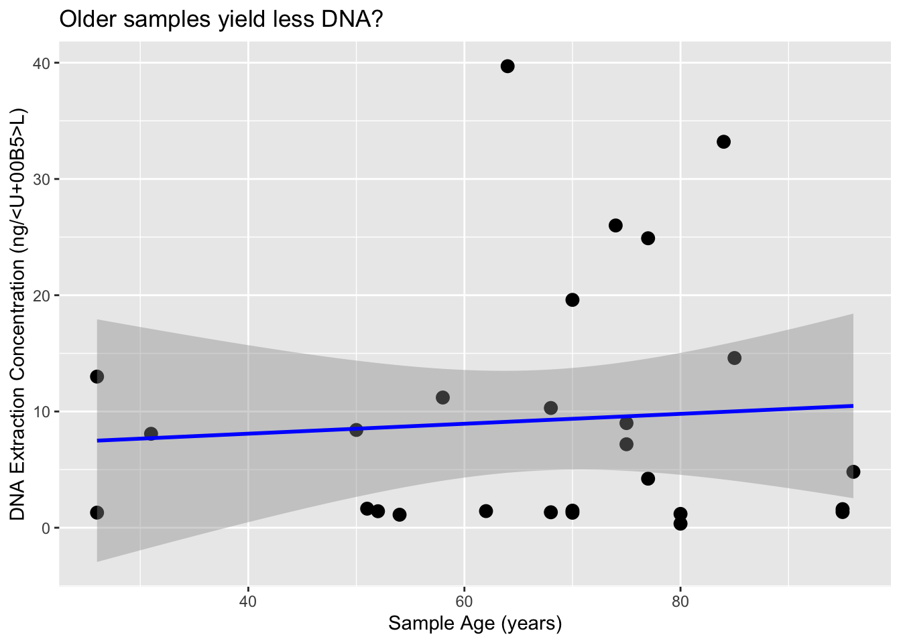
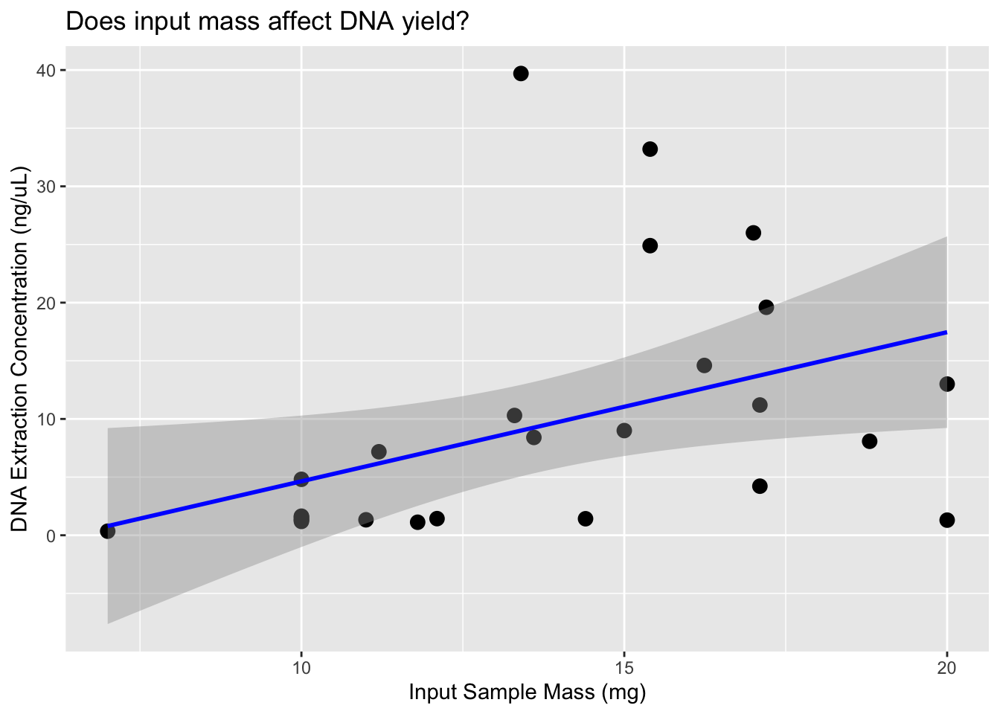
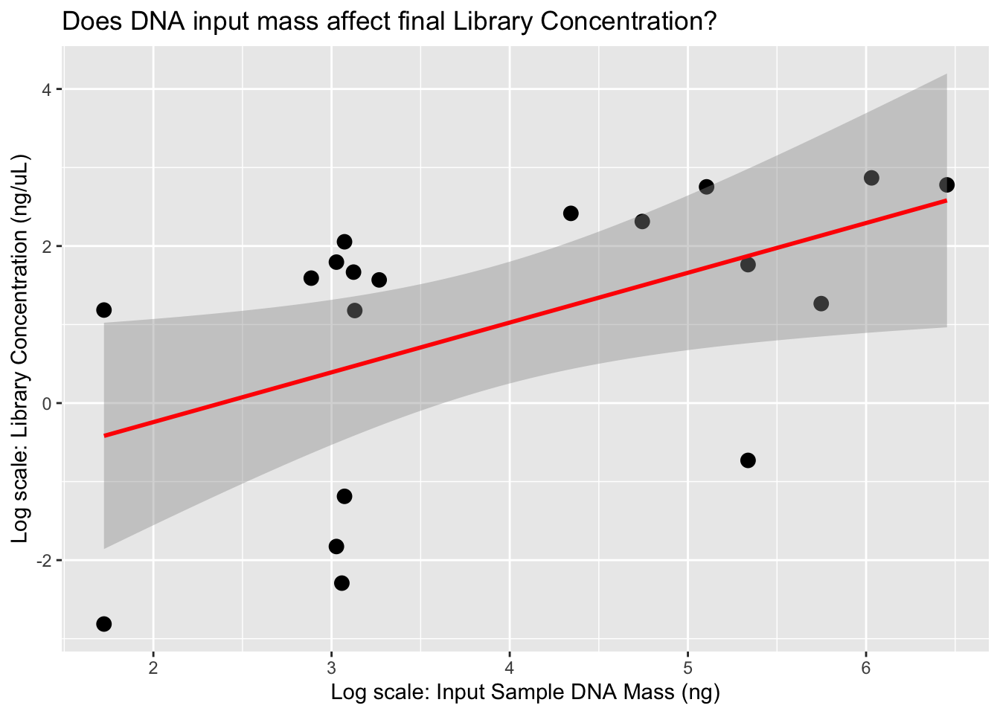
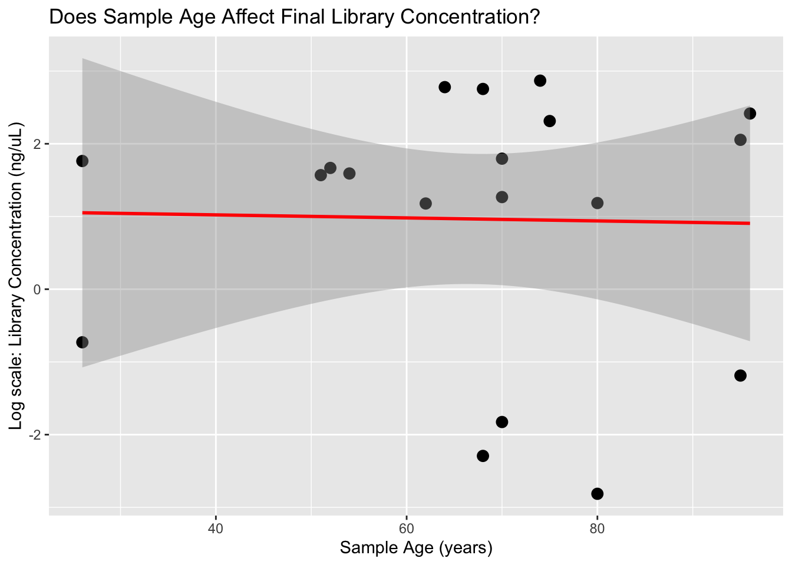
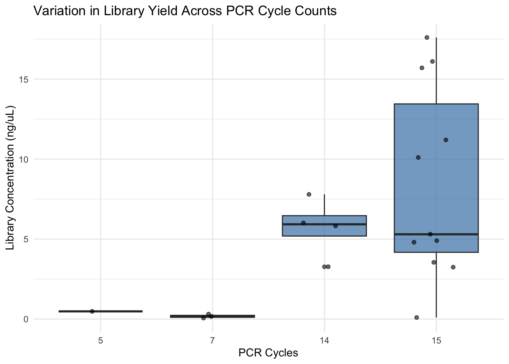

Code
library("tidyverse")
library("readxl")Kevin Quinteros
November 3, 2025
Over the past few weeks, we’ve been experimenting with DNA extraction and Illumina library construction using Ficus herbarium samples. Some of which are a century old. The library preparation follows the B.E.S.T. protocol (Carøe et al., 2018), which is designed for working with degraded DNA such as that found in museum specimens.
For the DNA extractions, we used a modified protocol of the Qiagen DNeasy Plant Mini Kit. A big thank you to the Martin Lab at the NTNU University Museum for sharing their DNA extraction and B.E.S.T. library preparation protocols, which included very helpful tips. We made a slight modification to the BEST library protocol by using NEB Q5U DNA Polymerase for library indexing and amplification. This polymerase does not require an extended warm start and, importantly, does not stall when encountering uracil, a common feature of damaged or degraded DNA resulting from cytosine deamination.
Below, we examine the 20 libraries and the DNA extraction we have performed so far. We aim to investigate whether there are any trends or correlations between DNA concentrations and BEST Library concentrations with respect to sample age. I hope this helps us with future DNA constructions.
Here we are reading in the data for current sample DNA extractions and B.E.S.T. library preparations.
| Sample | DNA_conc. | Sample_input | Collection_Year | Locality |
|---|---|---|---|---|
| FC132.921I | 1.30 | 20.00 | 1999 | Puerto Rico |
| FC89.921I | 1.47 | 10.00 | 1955 | Haiti |
| FA20.921I | 1.60 | 10.00 | 1930 | Domiinican Republic |
| FA59.921I | 1.19 | 10.00 | 1945 | Mexico |
| FC132.proK.922I | 13.00 | 20.00 | 1999 | Puerto Rico |
| FC89.proK.922I | 1.29 | 10.00 | 1955 | Haiti |
| FA20.proK.922I | 1.35 | 10.00 | 1930 | Domiinican Republic |
| FA59.proK.922I | 0.35 | 7.00 | 1945 | Mexico |
| FA26.1021I | 1.33 | 11.00 | 1957 | Guadeloupe |
| FA44.1021I | 1.12 | 11.80 | 1971 | Jamaica |
| FA45.1021I | 1.43 | 12.10 | 1963 | Jamaica |
| FA67.1021I | 1.64 | 10.00 | 1974 | Florida |
| FA68.1021I | 39.70 | 13.40 | 1961 | Florida |
| FA69.1021I | 19.60 | 17.20 | 1955 | Florida |
| FA70.1021I | 26.00 | 17.00 | 1951 | Florida |
| FA73.1021I | 7.18 | 11.20 | 1950 | Florida |
| FA16.1028I | 4.81 | 10.00 | 1929 | Cuba |
| FA17.1028I | 10.30 | 13.30 | 1957 | Domiinican Republic |
| FA63.1028I | 1.42 | 14.40 | 1973 | Nicaragua |
| FA1.1022I | 8.41 | 13.60 | 1975 | Bahamas |
| FA2.1022I | 11.20 | 17.10 | 1967 | Bahamas |
| FA3.1022I | 4.22 | 17.10 | 1948 | Bahamas |
| FA4.1022I | 24.90 | 15.40 | 1948 | Bahamas |
| FA12.1022I | 8.08 | 18.80 | 1994 | Cuba |
| FA15.1022I | 33.20 | 15.40 | 1941 | Cuba |
| FA71.1022I | 9.00 | 15.00 | 1950 | Florida |
| FA72.1022I | 14.60 | 16.24 | 1940 | Florida |
| Library ID | Sample | Collection_Year | DNA_conc. | Library Conc. | Cycles |
|---|---|---|---|---|---|
| BL1.1022 | FC132.ProkI.922 | 1999 | 13.00 | 0.482 | 5 |
| BL2.1022 | FC89.ProkI.922 | 1955 | 1.29 | 0.161 | 7 |
| BL3.1022 | FA20.ProkI.922 | 1930 | 1.35 | 0.305 | 7 |
| BL4.1022 | FA59.ProkI.922 | 1945 | 0.35 | 0.060 | 7 |
| BL5.1030 | FC132.ProkI.922 | 1999 | 13.00 | 5.830 | 14 |
| BL6.1030 | FC89.ProkI.922 | 1955 | 1.29 | 6.020 | 14 |
| BL7.1030 | FA20.ProkI.922 | 1930 | 1.35 | 7.800 | 14 |
| BL8.1030 | FA59.ProkI.922 | 1945 | 0.35 | 3.270 | 14 |
| BL9.1030 | FA26.1021I | 1957 | 1.33 | 0.101 | 15 |
| BL10.1030 | FA44.1021I | 1971 | 1.12 | 4.910 | 15 |
| BL11.1030 | FA45.1021I | 1963 | 1.43 | 3.250 | 15 |
| BL12.1030 | FA67.1021I | 1974 | 1.64 | 4.800 | 15 |
| BL13.1030 | FA68.1021I | 1961 | 39.70 | 16.100 | 15 |
| BL14.1030 | FA69.1021I | 1955 | 19.60 | 3.550 | 15 |
| BL15.1030 | FA70.1021I | 1951 | 26.00 | 17.600 | 15 |
| BL16.1030 | FA73.1021I | 1950 | 7.18 | 10.100 | 15 |
| BL17.1030 | FA16.1021I | 1929 | 4.81 | 11.200 | 15 |
| BL18.1030 | FA17.1021I | 1957 | 10.30 | 15.700 | 15 |
| BL19.1030 | FA63.1021I | 1973 | 1.42 | 5.300 | 15 |
Sample DNA_conc. Sample_input Collection_Year
Length:27 Min. : 0.350 Min. : 7.00 Min. :1929
Class :character 1st Qu.: 1.385 1st Qu.:10.00 1st Qu.:1946
Mode :character Median : 4.810 Median :13.40 Median :1955
Mean : 9.248 Mean :13.59 Mean :1958
3rd Qu.:12.100 3rd Qu.:16.62 3rd Qu.:1969
Max. :39.700 Max. :20.00 Max. :1999
Locality SampleAge
Length:27 Min. :26.00
Class :character 1st Qu.:56.00
Mode :character Median :70.00
Mean :67.15
3rd Qu.:78.50
Max. :96.00 Warning: There was 1 warning in `summarise()`.
i In argument: `across(where(is.numeric), mean, na.rm = TRUE)`.
Caused by warning:
! The `...` argument of `across()` is deprecated as of dplyr 1.1.0.
Supply arguments directly to `.fns` through an anonymous function instead.
# Previously
across(a:b, mean, na.rm = TRUE)
# Now
across(a:b, \(x) mean(x, na.rm = TRUE))# A tibble: 1 x 4
DNA_conc. Sample_input Collection_Year SampleAge
<dbl> <dbl> <dbl> <dbl>
1 9.25 13.6 1958. 67.1 Library ID Sample Collection_Year DNA_conc.
Length:19 Length:19 Min. :1929 Min. : 0.350
Class :character Class :character 1st Qu.:1948 1st Qu.: 1.310
Mode :character Mode :character Median :1955 Median : 1.430
Mean :1958 Mean : 7.711
3rd Qu.:1967 3rd Qu.:11.650
Max. :1999 Max. :39.700
Library Conc. Cycles SampleAge DNA_input
Min. : 0.060 Min. : 5 Min. :26.00 Min. : 5.60
1st Qu.: 1.866 1st Qu.:14 1st Qu.:58.00 1st Qu.: 20.96
Median : 4.910 Median :15 Median :70.00 Median : 22.88
Mean : 6.134 Mean :13 Mean :67.16 Mean :123.38
3rd Qu.: 8.950 3rd Qu.:15 3rd Qu.:77.50 3rd Qu.:186.40
Max. :17.600 Max. :15 Max. :96.00 Max. :635.20 # A tibble: 1 x 6
Collection_Year DNA_conc. `Library Conc.` Cycles SampleAge DNA_input
<dbl> <dbl> <dbl> <dbl> <dbl> <dbl>
1 1958. 7.71 6.13 13 67.2 123.[1] 0.07591351[1] 0.4233805[1] 0.6343754[1] 0.5686558[1] 0.142088Here we are plotting some of our variable to visualize trends
`geom_smooth()` using formula = 'y ~ x'
`geom_smooth()` using formula = 'y ~ x'
ggplot(lib, aes(x = log(DNA_input), y = log(`Library Conc.`))) +
geom_point(size = 3) +
geom_smooth(method = "lm", se = TRUE, color = "red") +
labs(x = "Log scale: Input Sample DNA Mass (ng)", y = "Log scale: Library Concentration (ng/µL)",
title = "Does DNA input mass affect final Library Concentration?")`geom_smooth()` using formula = 'y ~ x'
`geom_smooth()` using formula = 'y ~ x'

It appears that the DNA input mass is the primary factor influencing the amount of DNA recovered during the extraction process. Based on these results, we’ll aim for at least 10 mg of tissue per extraction to ensure we have sufficient material for downstream steps. Currently, we’re eluting in 62 µL, but we plan to reduce this to 50 µL to enhance DNA concentration and increase the total DNA input into our BEST library prep (we use 16 µL of extract per reaction). This is a minor modification from the Martin Lab protocol, as we’re performing half-volume reactions to reduce reagent usage and allow more library constructions.
Our next step will be to run a test sequencing batch to evaluate how these libraries perform. We didn’t include a size selection step, so we expect a higher number of short insert-size fragments. However, we did perform a 1:1 SPRI bead cleanup after PCR, which should have removed most fragments (plus the 132 bp adapters) below ~200 bp, meaning the shortest insert sizes should be around 70 bp.
We ran an agarose gel on an aliquot of our library to assess the distribution of fragment sizes. Most fragments were approximately 300 bp in length, corresponding to an insert size of around 168 bp. This is on the shorter side for Illumina libraries and is not ideal; however, they still can be used for variant calling. The biggest issues would be inflated duplicate rates, as two reads might map to the exact same location.
One way to improve the fragment size distribution would be to perform size selection before library indexing and amplification. However, this could significantly reduce the total amount of DNA available for library amplification, which is one of the advantages of the BEST library protocol compared to standard Illumina library prep. Another option is to perform size selection after library amplification, but this would not eliminate the PCR bias, particularly the overrepresentation of shorter fragments.
Another challenge we are currently seeing is that some libraries have very low concentrations, around 3 ng/µL. If this is due to an excess of smaller fragments, it remains a concern. Increasing PCR cycles may boost yield, but this approach can also increase duplication rates, thereby reducing library complexity.